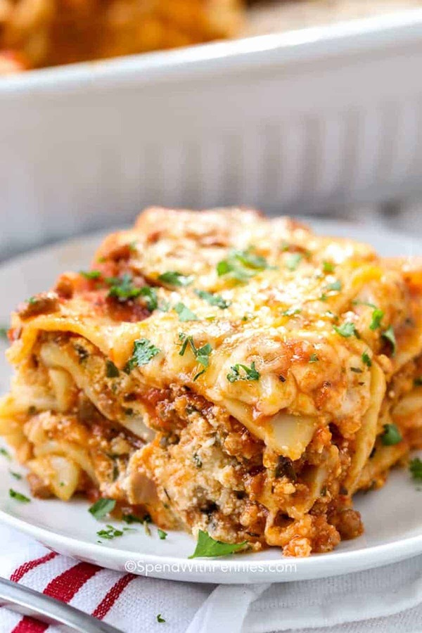

Home About Us Contact Us
An Easy Home Made Lasagna
In this great lasagna recipe, sheets of pasta are layered
with a cheesy filling, a rich meaty tomato sauce and more
cheese baked golden bubbly brown on top.
Ingredients
- 12 uncooked lasagna noodles
- 4 cups shredded mozzarella cheese, divided
- 1/2 cup shredded parmesan cheese, divided
- 3/4 teaspoon salt
- 3/4 teaspoon pepper
Tomato Sauce
- 1/2 pound ground beek
- 1/2 pound Italian sausagae
- 1 yellow onion diced
- 2 cloves garlic minced
- 36 ounces pasta sauce
- 2 tablespoons tomato sauce
- 1 teaspoon Italian seasoning
Cheese Mixture
- 2 cups ricotta cheese or cottage cheese
- 1/4 cup chopped parsley
- 1 large egg beaten
Instructions
- Preheat the oven to 350°F. Bring a large pot of salted water to a boil. Add the lasagna noodles and cook until al dente (firm) according to package directions. Drain, rinse under cold water, and set aside.
- Meanwhile, in a large skillet or Dutch oven, brown the beef, sausage, onion, and garlic over medium-high heat until no pink remains. Drain any fat.
- Stir in the pasta sauce, tomato paste, Italian seasoning, ½ teaspoon of salt, and ¼ teaspoon of black pepper. Simmer uncovered over medium heat for 5 minutes or until slightly thickened. Taste and season with additional salt if desired.
- In a separate medium bowl, combine 1 ½ cups mozzarella cheese, ¼ cup parmesan cheese, ricotta, parsley, egg, and ¼ teaspoon salt.
- Spread 1 cup of the meat sauce in a 9×13 pan or casserole dish. Top it with 3 lasagna noodles. Layer with ⅓ of the ricotta cheese mixture and 1 cup of meat sauce. Repeat twice more. Finish with 3 noodles topped with remaining sauce
- Cover with foil and bake for 45 minutes.
- Remove the foil and sprinkle the top of the lasagna with the remaining 2 ½ cups mozzarella cheese and ¼ cup parmesan cheese. Bake uncovered for an additional 15 minutes or until browned and bubbly. Broil for 2-3 minutes if desired.
- Rest for at least 15 minutes before cutting.
Home About Us Contact Us